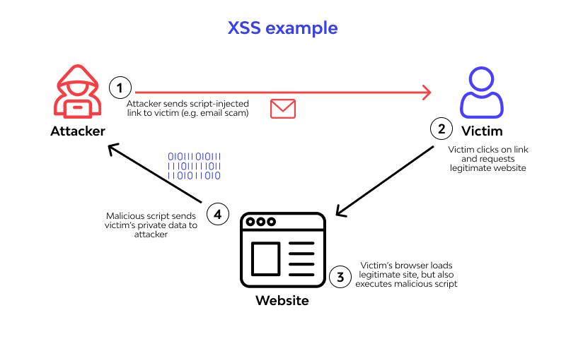

What is Cross-Site Scripting (XSS)?
XSS is a exploitation that allows attackers to inject malicious scripts into web pages viewed by other users. Usually through the script tag in HTML When executed, these scripts can access cookies, session tokens, or other sensitive information stored by the browser, potentially enabling an attacker to impersonate a user or perform unwanted actions on their behalf.
XSS vulnerabilities typically arise from improper handling of user input, similar to an SQL Injection actually. Sometimes the designer does not sanitise their code properly and it leads to this. We need to know about the three main types of XSS: Stored, Reflected, and DOM-based XSS, each differing in the way the malicious script is delivered and executed.
